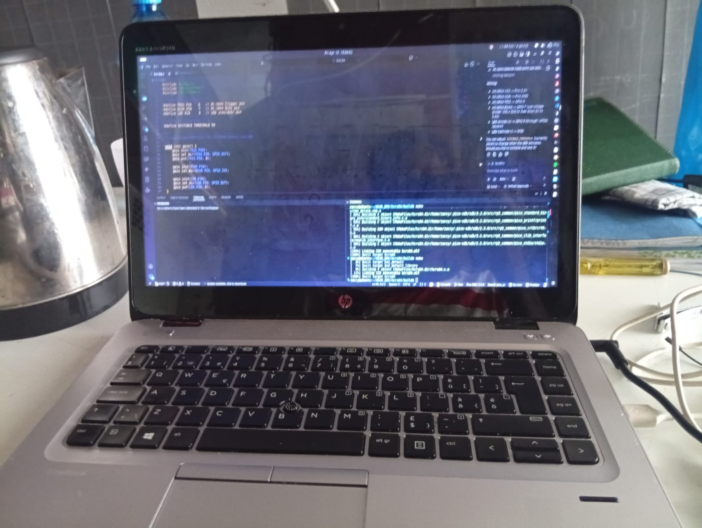

The main objectives of the first week of the embedded systems training program were to:
i was intriduced to python programming where my first assignment was to create a simple program that would calculate the area of various codes such as a circle, square and rectangle. I also learned about the different data types in python and how to use them effectively in my programs. Additionally, I explored the basics of HTML and CSS, which are essential for creating web pages and user interfaces for embedded systems applications. You can view the program repository here Assignment Repository

Also During the first week of the embedded systems training program, I was introduced to the fundamental concepts of embedded systems. I learned about the architecture of embedded systems, including the components such as microcontrollers, sensors, actuators, and communication interfaces. I also gained an understanding of the different types of embedded systems and their applications in various industries.
I explored the basics of programming embedded systems using micropython and got hands-on experience with a simple microcontroller development board.
Overall, the first week provided a solid foundation for understanding embedded systems and set the stage for more advanced topics in the coming weeks.
In the next week, I look forward to diving deeper into hardware and software integration, where I will learn how to interface sensors and actuators with microcontrollers and develop more complex embedded applications.
Key learning outcomes from Week 1:
Overall, Week 1 was an exciting start to the embedded systems training program, and I am eager to continue learning and exploring more advanced topics in the weeks ahead.
Next week, I will focus on hardware and software integration, where I will learn how to interface sensors and actuators with microcontrollers and develop more complex embedded applications.